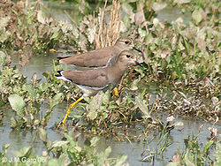
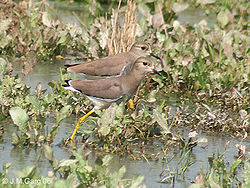

| White-tailed Lapwing | |
|---|---|
|  | |
| near Hodal in Faridabad District of Haryana, India. | |
| Conservation status | |
| Binomial name | |
| Vanellus leucurus (Lichtenstein, 1823) |
|
| Synonyms | |
|
Charadrius leucurus Lichtenstein, 1823 |
| White-tailed Lapwing | |
|---|---|
|  | |
| near Hodal in Faridabad District of Haryana, India. | |
| Conservation status | |
| Binomial name | |
| Vanellus leucurus (Lichtenstein, 1823) |
|
| Synonyms | |
|
Charadrius leucurus Lichtenstein, 1823 |
The White-tailed Lapwing or White-tailed Plover (Vanellus leucurus) is a wader in the lapwing genus.
It breeds semi-colonially on inland marshes in Iraq, Iran and southern Russia. Four eggs are laid in a ground nest. The Iraqi and Iranian breeders are mainly residents, but Russian birds migrate south in winter to south Asia, the Middle East and north east Africa. It is a very rare vagrant in western Europe, the first example in Britain being found at Packington, Warwickshire on 12 July 1975.
This medium-sized lapwing is long-legged and fairly long-billed. It is the only lapwing likely to be seen in other than very shallow water, where it picks insects and other small prey mainly from the surface.
Adults are slim erect birds with a brown back and foreneck, paler face and grey breast. Its long yellow legs, pure white tail and distinctive brown, white and black wings make this species unmistakable. Young birds have a scaly back, and may show some brown in the tail.
The breeding season call is a peewit, similar to Northern Lapwing.
The White-tailed Lapwing is one of the species to which the Agreement on the Conservation of African-Eurasian Migratory Waterbirds (AEWA) applies.

{kind=link}